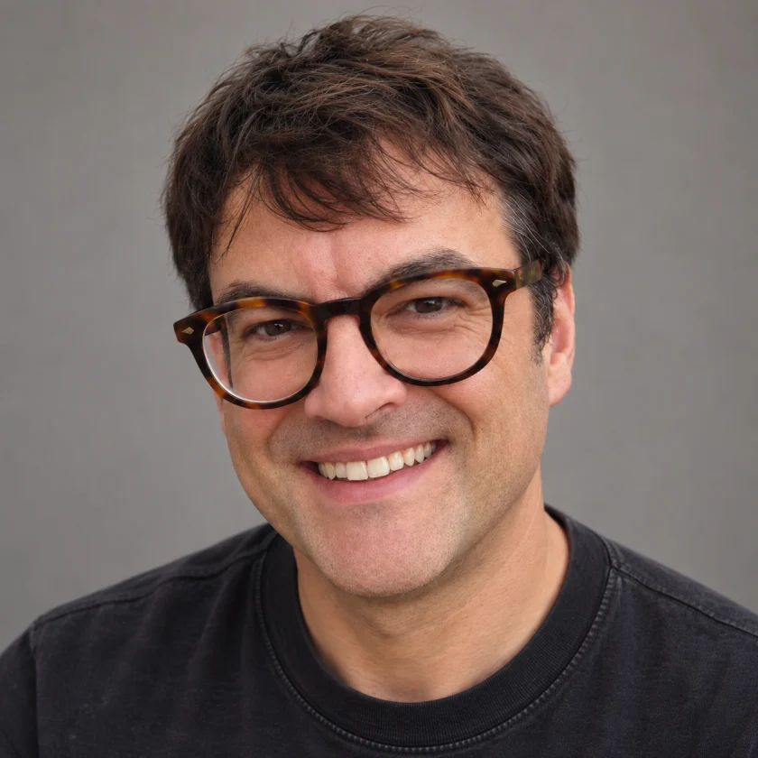
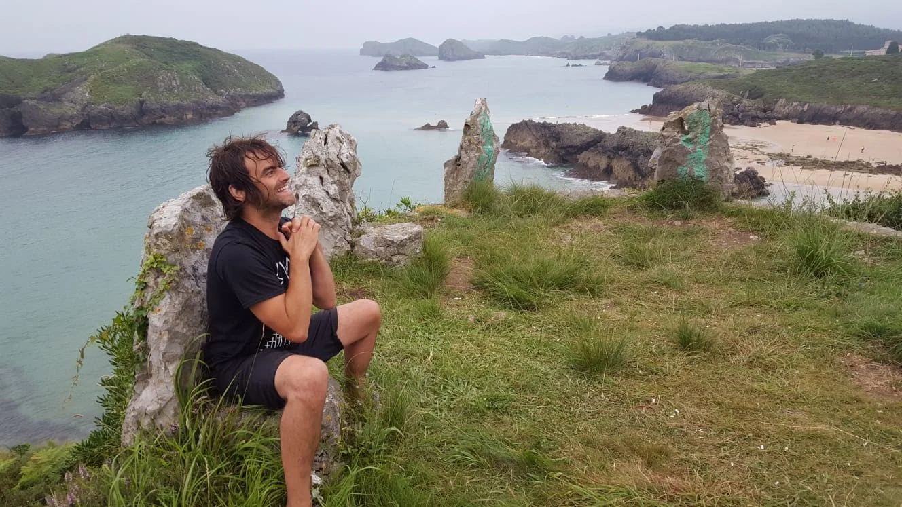

Presentación
El otro día fui a ver Creduto Morto. Volví a casa, encendí la luz de la cocina y descubrí que me faltaba la sombra. La tía lista se había quedado escondida en el telón para preguntar si le hacíais una prueba. Os escribo para que contéis conmigo también, porque además ella sola no tiene currículum.
Juntos, llevamos mucho tiempo intentando representar a una persona normal. Aprendemos a hacer cosas normales para darle veracidad al papel. La vocación se nos nota en cuanto intentamos contar una historia sentados. Digo «entró un señor muy digno» y ya estamos de pie, enseñándoos cómo saluda ese hombre con la capa enganchada en el picaporte.
Me encantaría formar parte de Disparate Pomodoro para poder seguir haciendo eso con vosotros. Me apunto a un papel de reparto y también a aprenderme el de un compañero para cubrirle cuando haga falta. Mi sombra ya se sabe el camino.

Publicidad
MTV Day
Tres spots para MTV.
Dos actores en una azotea.
Trayectoria
Teatro
- La ensaladera del coronel Cray (2016). Interpreté al padre Brown en esta adaptación teatral de un relato de G. K. Chesterton.
- Astur Midsommar (2018). Representé esta obra de horror veraniego en las fiestas de Troenzo, en Llanes.
- Espositivo Academy. Hago talleres de teatro con regularidad y actúo en los eventos habituales de la academia.
- Llevo la dirección artística de obras de teatro con grupos de adolescentes.
Cine
- Asociación Cultural de Aldeanueva. Cada año participo con Miguel de Molina en el rodaje de un largometraje en el que intervienen todos los chavales que pasan el verano en el pueblo.
Figuración en cine y televisión
- Los jinetes del alba (rodaje: 1989-1990). Figuración en la serie dirigida por Vicente Aranda. TVE / Asterisco Films.
- El abuelo (rodaje: 1997; estreno: 1998). Figuración en la película de José Luis Garci. Nickel Odeon Dos, con participación de TVE.
- Al salir de clase. Figuración en la serie de BocaBoca para Telecinco, emitida entre 1997 y 2002.
- Yakarta (2025). Figuración en el rodaje de Chamberí. Serie creada por Diego San José, producida por 100 Balas y Buendía Estudios Canarias para Movistar Plus+.
Publicidad
- MTV Day. Actué en spots de la campaña, con escenas a dos en una azotea.
- Dirección de spots. Trabajé varios años en JAS Group y, junto con Bertolotti y Jaime Lacasa, dirigí spots para Renault, Vodafone y Solán de Cabras.
- Festival Internacional de Benicàssim. Fui modelo para la tienda online del festival.